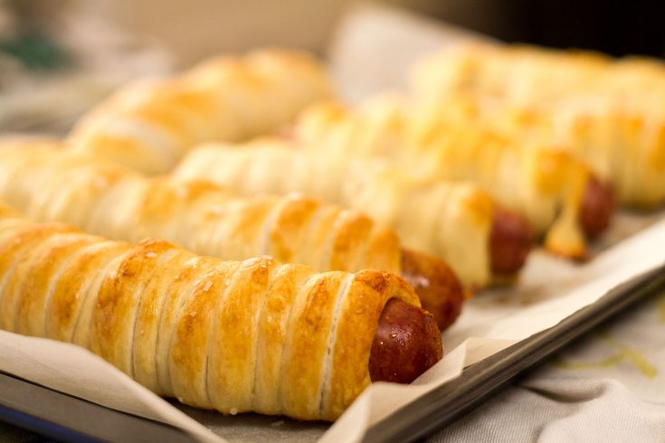

Pretzel dogs

Description
Réclamé par la joyeuse bande d'Epic Joystick, voici ma version d'un classique culinaire Néo-Brunswickois: les pretzel dogs !
Ingrédients
- 1 tasse de farine tout usage
- 1 boule de pâte à pretzel
- 1 paquet de 8 saucisses à hot dog
- 150 ml (2/3 tasse) de bicarbonate de soude
- 2 jaunes d'oeuf
- Gros sel